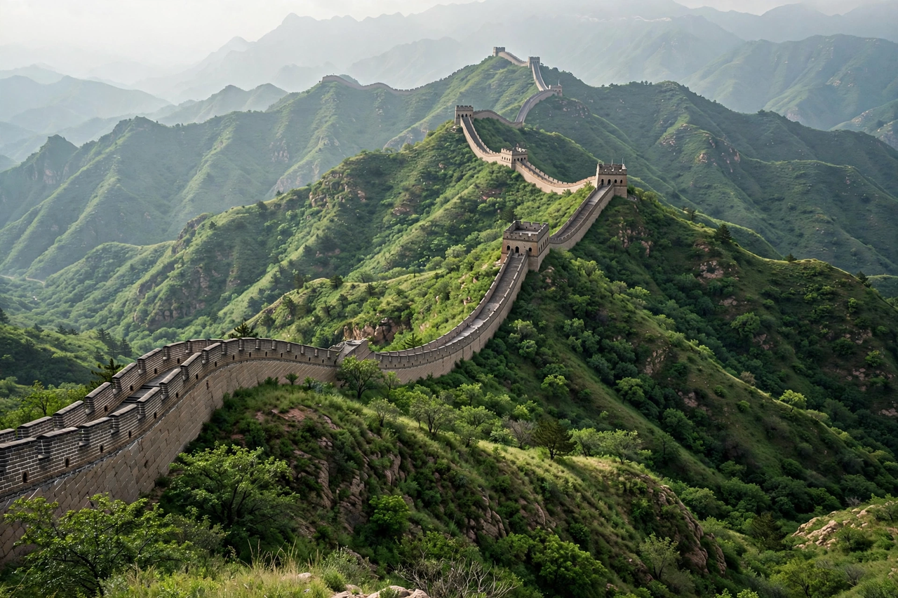

China, officially the People's Republic of China (PRC), is a country in East Asia. With a population of more than 1.4 billion, it is the world's second-most populous country after India. China spans five geographical time zones and borders fourteen countries — the joint most of any country. Its capital is Beijing and its largest city is Shanghai. China is the world's second-largest economy by nominal GDP, the largest exporter, and a recognised nuclear-weapon state with the world's largest standing army.

| People's Republic of China | |
|---|---|
| Capital | Beijing |
| Largest city | Shanghai |
| Official language | Standard Chinese (Mandarin) |
| Government | Unitary party-state under the Chinese Communist Party |
| Established | 1 October 1949 (proclaimed by Mao Zedong) |
| Area | ~9.6 million km² (3rd or 4th largest country) |
| Population | ~1.41 billion (2024 estimate) |
| Currency | Renminbi (yuan, CNY) |
China is one of the world's oldest continuous civilisations, with recorded history stretching back over three millennia through a succession of dynasties from the Shang to the Qing. The last dynasty fell in 1912, giving way to the Republic of China, which fragmented amid warlordism, Japanese invasion, and civil war. On 1 October 1949 Mao Zedong proclaimed the People's Republic in Beijing after the Communists defeated the Nationalists, who retreated to Taiwan.
Under Mao, China underwent land reform, industrialisation drives such as the Great Leap Forward (which caused a devastating famine), and the Cultural Revolution. After Mao's death in 1976, Deng Xiaoping launched market reforms that produced decades of rapid growth. China joined the World Trade Organization in 2001 and became the world's largest economy by purchasing-power parity in the 2010s.
China's terrain descends from the Tibetan Plateau and Himalayas in the west — including Mount Everest on the Nepal border — to fertile eastern plains. Major rivers include the Yangtze (Asia's longest) and the Yellow River, cradle of Chinese civilisation. Climates range from subarctic in the north to tropical in the south, and the country is exceptionally biodiverse.
The PRC is a unitary state governed by the Chinese Communist Party (CCP), whose general secretary — since 2012, Xi Jinping — also serves as president and chairman of the Central Military Commission. The National People's Congress is the highest formal organ of state power. Hong Kong and Macau are Special Administrative Regions under the "one country, two systems" principle; the PRC claims Taiwan, which it has never controlled, as a province.
China is the world's leading manufacturer and exporter and a central node in global supply chains. State-owned enterprises dominate sectors such as banking, energy, and telecommunications alongside a large private sector. Recent policy has emphasised "high-quality development", technological self-reliance, and the Belt and Road Initiative of overseas infrastructure investment.
The Han Chinese form about 91% of the population; 55 ethnic minorities are officially recognised. Mandarin is the national language, written with simplified Chinese characters. China is the birthplace of Confucianism, Taoism, and Chinese Buddhism, and of inventions including paper, printing, gunpowder, and the compass. Its cuisine, cinema, and literature are globally influential, and the country consistently tops the Olympic medal tables alongside the United States.